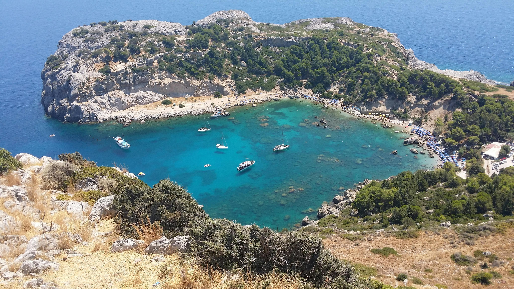
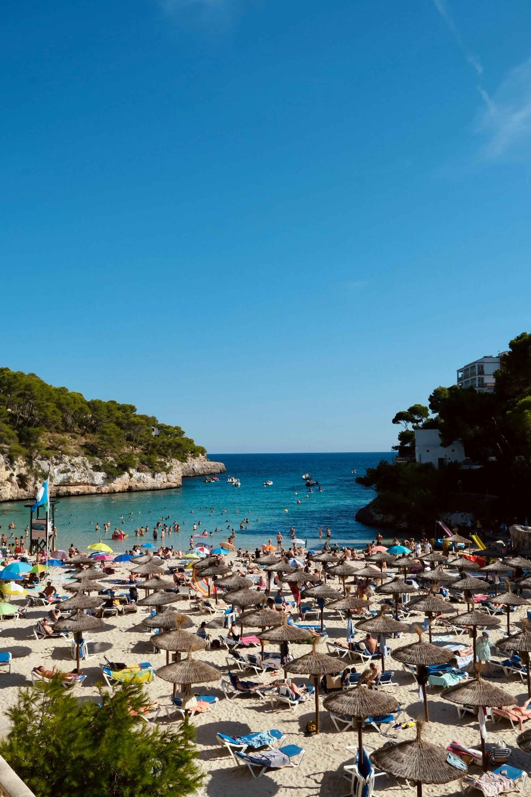
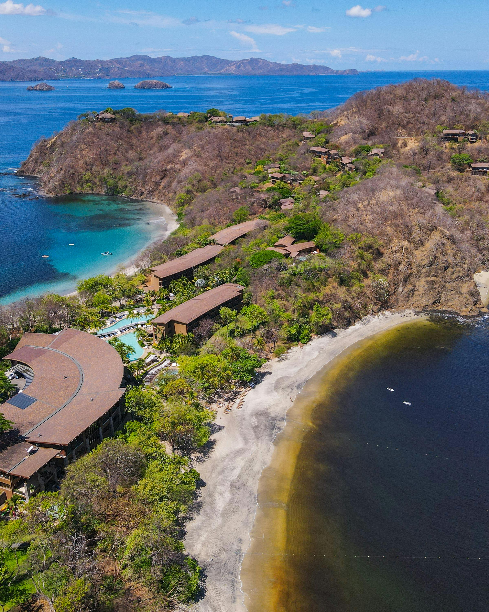

Summer Holiday Destination 1
Rhodes ~ Greece
Best time to visit: June - September
Best For... Medieval Architecture, Wineries, Beaches, and a Brilliant Nightlife Scene.
Must See... Prasonisi is a tidal island joined to the mainland by a long sand bar, this creates a beach with water on both sides.
Rhodes Old Town is the medieval centre of Rhodes city, it is straight from a movie, encased by a cresent-shaped fortificaton. St Paul's Beach is the main sandy beach
on the southern curve of an ovular bay with just a small opening on its northeastern side. The beache's main attraction is the transparent sea, tranquil and shallow enough for non swimmers to relax
Top Restaurant... La Veranda- Seafood and Mediterranean, El Toro Steak House- Steakhouse and Barbecue, Mylos A La Carte Restaurant- mediterranean and Greek
Summer Holiday Destination 2
Mykonos ~ Greece

Best time to visit: April - June and September - October
Best For... A variety of different things ranging from nightlife to windmills but of course you can't forget
about its super paradise beaches, Psarou Beach, Panagia Paraportiani, Little Venice. Mykonas is also great for shopping and it is a popular
destination for film making, espcially those set in the mediterranean.
Must See... Mykonos Windmills(iconic island sight), Church of Panagia Paraportiani(famous Architectural gem),
little Venice(scenic waterfront area), Delos(ancient archaeological site), Kalafati(windsuring paradise) and Archaeological Museum of Mykonos(cultural history hub)
Top Restaurant... Nice N Easy- Mediterranean Cuisine with sea front views. There are a variety of fish and meat dishes, salads, and even traditional gyros, Kiki's Tavern- Traditional Cusine. It is a fantastic opportunity to relax and enjoy a good meal with a cold beer or glass of Greek ouzo. L'Aragosta- Italian Cusine with exceptional sea views. The Restaurant serves a variety of italian dishes.
Summer Holiday Destination 3
Mallorca ~ Spain
Best time to visit: March - May
Best For... Palma's glorious culture from art and architecture to nightlife. Get a birds-eye-view from a castle or sanctuary.
Endulge in all the food and drinks. Travel back in time al Mallorca's ancient ruins.
Must See... Palma de Mallorca(historic capital city), Royal Palace of La Almudaina(historic royal site), Es Pontas(natural rock arch),
fornalutx(picturesque town), Deia(artistic village) and Cuevas Del Drach(famous caves)
Top Restaurant... El Olivo, La Residencia, Belmond Hotel, Deia-Best for special occasions, Es Raco d'es Teix-Best for world-class dinning, Barretes Restaurant at Ca's Xorc Luxury Retreat-Best for views and gardens, Restaurant Nama Deia-Best for asian food, Bens D'Avall-Best for sea-view terrance, Patiki Beach-Best for healthy food on the beach
Summer Holiday Destination 4
Bali ~ Indonesia

Best time to visit: May, June, September and October
Best For... Surfing, beaches, mountainous jungle rainforest, temples, yoga,
hinduism, spirituality and scuba diving.
Must See... Nusa lembongan(iconic beach vista), Nusa Penida(breathtaking landscape), Mount Batur(active volcano),
Bali Botanic Garden(lush gardens), Pura lempuyang Luhur(gateway to heaven), Menjangan Island(wildlife haven).
Top Restaurant... St. Tropez-Seaside elegance, Da Maria-Italian elegance, Huge Restaurant-Sophisticated dinning, Breeze at Samaya-Beach front paradise, Dome-Natural dinning and Spice Mantraa-Vibrant Indian.
Summer Holiday Destination 5
Costa Rica ~ Central America
Best time to visit: December - April
Best For... Amazing beaches, cute sloths, World-class snorkelling and diving, Tons of birds, Spectacular waterfalls, Relaxing hot springs, Surfing,
Delicious but simple food, Friendly locals, Adventure tours, Nature parks and protected areas, laid-back nightlife and Huge volcanoes
Must See... Manuel Antonio National Park(biodiversity hotspot), Poas Volcano(active volcano), Isla dl Cano(snorkelling paradise),
La Fortuna waterfall(scenic waterfall),Tortuga Island, Baja California Sur(Beach getaway) and Arenal Volcano National park(volcanic landscap)
Top Restaurant... Naans & Curries Pinares- in Curridabat, Restaurante Tiquicia La Fortuna-in La Fortuna de san Carlos, La esquina de Buenos Aries-in San Jose, Restaurante Grano de Oro- in San Jose Taste of India506-in Escazu, Pesqueria da Limonta-in Alajuela.
Summer Holiday Destination 6
Maldives ~ Asia

Best time to visit: November - April
Best For... World-class diving, Miles of empty white-sand beaches, Luxury resorts, Beautiful sunsets, Sugary sand, skydiving and Boduberu folk music and dancing.
Must See... Banana Reef(snorkelling and diving), Raa Atoll Best for the diverse marine life, The Fari Islands Best for luxury, Baa Atoll Best for wildlife-spotting excursions,
Laamu Atoll Best for remoteness and Local islands Best for culture vultures.
Top Restaurant... The Rajdhani-American & Indian, The Cloud Restaurant-Seafood & European, Only Blu - Under Ocean Restaurant- Seafood, Healthy, Ministry Of Crab-Seafood & Asian, Carne Diem Grill by Dharshan-Steakhouse, Jiao Wu-Chinese & Asian, Sala Thai Restaurant-Asian & Thai.